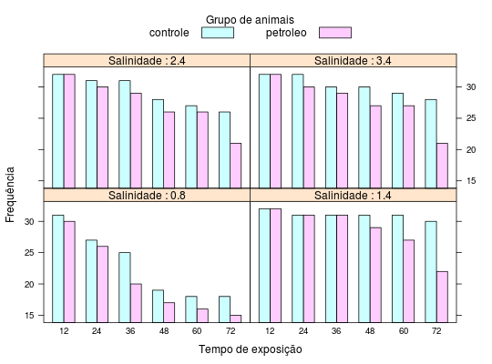

Dados de um estudo cuja finalidade foi avaliar o efeito da contaminação de um estuário por derramamento de petróleo na fauna local. Cada animal foi submetido a um tratamento obtido da combinação dos níveis contaminação por petróleo (sim ou controle) e percentual de salinidade de aclimatação. Os animais foram observados por 72 horas e o número de sobreviventes foi registrado a cada 12 horas.
Um data.frame com 48 observações e 4 variáveis, em que
gruposalintempoanimaisPAULINO; SINGER (2006), Tabela 11.10, pág. 400.
data(PaulinoTb11.10) str(PaulinoTb11.10)#> 'data.frame': 48 obs. of 4 variables: #> $ grupo : Factor w/ 2 levels "controle","petroleo": 2 2 2 2 2 2 2 2 2 2 ... #> $ salin : num 0.8 0.8 0.8 0.8 0.8 0.8 1.4 1.4 1.4 1.4 ... #> $ tempo : int 12 24 36 48 60 72 12 24 36 48 ... #> $ animais: int 30 26 20 17 16 15 32 31 31 29 ...xt <- xtabs(animais ~ ., data = PaulinoTb11.10) ftable(xt)#> tempo 12 24 36 48 60 72 #> grupo salin #> controle 0.8 31 27 25 19 18 18 #> 1.4 32 31 31 31 31 30 #> 2.4 32 31 31 28 27 26 #> 3.4 32 32 30 30 29 28 #> petroleo 0.8 30 26 20 17 16 15 #> 1.4 32 31 31 29 27 22 #> 2.4 32 30 29 26 26 21 #> 3.4 32 30 29 27 27 21library(lattice) barchart(animais ~ factor(tempo) | factor(salin), groups = grupo, horizontal = FALSE, data = PaulinoTb11.10, auto.key = list(space = "top", columns = 2, cex.title = 1, rectangles = TRUE, points = FALSE, title = "Grupo de animais"), xlab = "Tempo de exposição", strip = strip.custom( strip.names = TRUE, var.name = "Salinidade"), ylab = "Frequência")